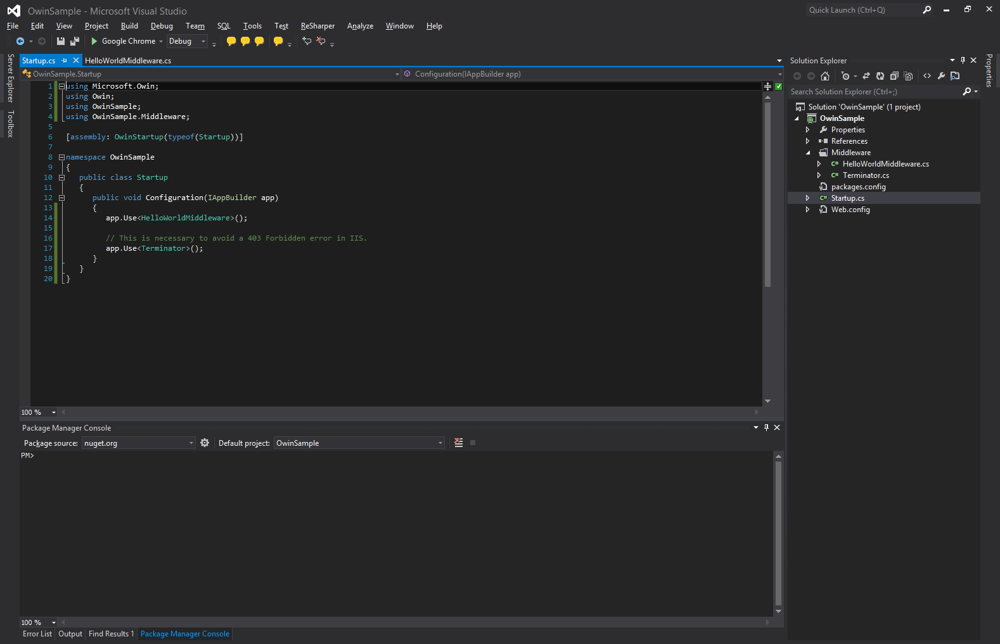
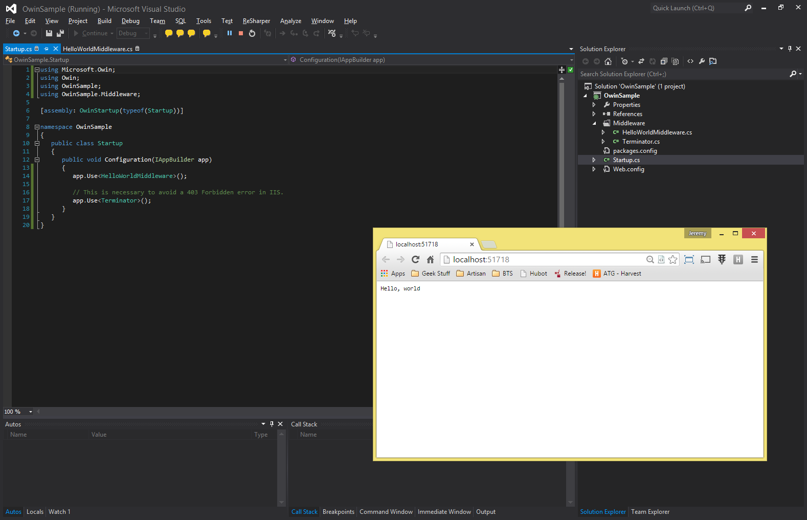

Chrome Extensions
Basics
!!! IMPORTANT !!!
It's just HTML, CSS, and JavaScript
Manifest
Interface Types

Content Scripts
- Run a custom script on the page
- Can access DOM elements
- Cannot interact with JavaScript variables
- Use "messages" to communicate back and forth
chrome.*
Hadoop
Big Data
- Volume
- Variety
- Velocity
Hadoop storage
- HDFS
- Hadoop
- Distributed
- File
- System
- Designed to store very large files with
- Streaming data access
- clusters of commodity hardware
- Not suitable for small files
Map Reduce
- Programming model and an associated implementation for processing and generating large data sets with a
- Parallel
- Distributed Algorithm on a
- Cluster (HDFS)
- Single Reducer (multiple slows down the process with sorting and shuffling)
Map Reduce Example
- map (InputKey, InputValue) => Set of (IntermediateKey, IntermediateValue)
- ex) {0, "Twinkle Twinkle Little Star"} =>
- {"Little", 1}
- {"Star", 1}
- {"Twinkle", (1,1)}
- reduce (IntermediateKeys, IntermediateValues) => Set of (OutputKey, OutputValue)
- ex)
- {"Little", 1} => {"Little", 1}
- {"Star", 1} => {"Star", 1}
- {"Twinkle", (1,1)} => {"Twinkle", 2}
Resources
- a(href="https://hadoop.apache.org/") Hadoop website
MeteorJS
R
What is it and why do I care?
- R is an open source implementation of S
- Great for numerical and graphical analysis
- Is a language and an environment
- Cross platform support
- active development and large community
- FREE!
Great! So now what?
- Load up data from
- File-based data
- Web-based data
- Databases (using RODBC extension)
- ...the list goes on
- Clean, transform, and merge data
- Visualize it using R's comprehensive set of graphing utilities
How do I get started?
Clean Code
Based on a talk by Matthew Renze
OWIN w/ ASP vNext
ASP.NET + WebForms
Web API
The Promised Land
Pros
- Lightweight, fast
- Minimal dependencies
Cons
- Process management and low-level APIs
- Re-invent the wheel
- Each framework had to build host support
OWIN
Open Web Interface for .NET
OWIN Basics
Environment Dictionary
IDictionary<string, object>
AppDelegate
Func<IDictionary<string, object>, Task>
That's all Folks!™
Step by Step
Step by Step
Step by Step
Step by Step
Step by Step

Step by Step
